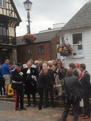

{kind=link}
In June and July this year I met Tracy and then Tracey. Both of them are former nurses, both are using
art to combat serious illness and both of them – even on the briefest
acquaintance -- are life enhancers. I feel better for knowing them.
I met Tracy Brown beside Brightlingsea Hard in Essex as we
waited in weak sunshine to witness the re-launch of an oyster smack. The
Countess of Wessex (patron of the Sail Training Associations) was expected so we’d all been moved around to
accommodate Media and Security, then were moved once again from behind the
receiving line of Dignitaries. Very dignified they are too, in Brightlingsea. They
haven’t had a royal visitor to the Hard since Queen Mary in 1932 but as Brightlingsea
is the only Cinque Port north of the Thames (to be precise it’s a Limb of
Sandwich) it appeared to have experienced no difficulty dusting off the cocked hats, swords and black silk stockings.
 |
The Countess is the one not in fancy dress |
{kind=link}
I’m so
glad that we have. Tracy’s photos of that day were outstanding (in
my eyes) and, by reading her posts from many other occasions since, I can sense some
of the energy and the joie de vivre with which she is battling breast cancer. And if you consider that the “battling” word has
become somewhat overused, I can only insist that’s the right one for Tracy. She’s a former hospice nurse, determinedly living the
message “I am not what happened to me: I am what I choose to become.” She also advises "Live for the moments you can't put into words" -- which her photographs achieve wonderfully.
{kind=link}
I haven’t met Tracey Shorthouse in person – only
via twitter, email and her volume of poetry I Am Still Me. Tracey too is a former
nurse; her enemy is not cancer but dementia. "Life is being positive. I live with dementia and love my life. I write, walk, take photos, give talks." Two years ago, aged 45, she was
diagnosed with early onset Alzheimer’s and a rarer form of dementia called
posterior cortical atrophy. This almost came as a relief: it had been so hard
knowing there was something wrong in her head but not knowing what it was and
sometimes finding it impossible to persuade people, even doctors, to take her
seriously. Now Tracey, like Tracy, is determined to make the most of every day.
“You have to grab opportunities with both hands as they might not come
again.” She wonders whether she feels like this because of her previous
experience. “During my nursing career, I used to see patients give up so easily
and it really stuck in my mind. When I was diagnosed I didn’t want to be like
that.” (The
Elder Interview)
Clearly both Trac(e)ys are realists and both are brave and
positive women but this blogsite is about words and writing which is why I’m
going to commend Tracy Brown’s photos to you, thank her for her
companionship on a particularly pleasant day then focus a little longer on
Tracey Shorthouse’s poetry.
In human terms I Am Still Me is an achievement. By the time Tracey was diagnosed she’d
forgotten how to use a computer but she’s re-learned that skill and convinced
herself that she can re-learn other skills “if I push myself”. Physiologically she may be right: the brain is a marvellous place and even when shrinking under
the stifling attack from the tangles of the tau and amyloid (which I imagine as similar to “devil’s snare” from JK Rowling’s Harry Potter and the Philosopher's Stone) I believe it may have the ability to forge new neural pathways where possible. Dementia activists – people
like Tracey who “push” themselves -- are often so articulate that cynics accuse
them of not having the illness "really".
Initially Tracey tried to write short stories to keep her brain stimulated but that didn’t work. On my tiny research sample of one (reading to Mum) I can see why – the writer (or
listener) of a story almost always needs to retain some factual information, which may be a difficulty.
In poetry or song, however, precise recall may be less essential and the patterns
of rhyme and rhythm provide a supportive structure. Tracey found that she could express her emotions through poetry.
Many of Tracey's poems in I Am Still Me address her dementia directly and, for me, these are her best. You could argue (okay I won’t, but one day
there’ll be a psycho-linguist who does) that dementia is an illness that very often attacks sequentially, decimating Proper Nouns, nouns (collective, abstract and concrete
nouns) until it reaches the pronouns that seem to be the very heart of our
identity. Tracey’s poem “Prison of
Thoughts” is not always rhythmically
secure, its rhyme choices are occasionally odd but it deserves to be remembered for
ever for a single, defiant half line “Her is me”. The speaker
is betrayed, angry, demanding to be released:
“You promised and made a vow
But all you have
done is imprison her.
Her is me, don’t
you hear?
It’s so
unfair, this prison of walls
When you are there and I am here.
You say it is to prevent my falls.
When you are there and I am here.
You say it is to prevent my falls.
That’s why my mother hates me sometimes when I say goodnight
and leave her, though I undertake faithfully to return next day and I promise there will be someone there all night to look after her. It's not good enough. “Her is ME!” she wants to say. How can you
leave ME here? “It’s so unfair.” It is. As her dementia advances into its later stages that desperate
battle for ME may represent the self’s battle for survival. One her bad days Mum often loses "I" (the pronoun that is a subject so may have agency) and only the suffering object "me" remains: "me frikened, me no understand".
Do you remember those
heart-rending, hate-filled monologues in The
Hobbit when Smeagol / Gollum realises that the Thief, Bilbo Baggins has
stolen his ring, “my precioussssss”, the single thing he treasures, that makes
his life both possible and worthwhile, that constitutes his identity. When my
mother is at her worst, full of grief and loss and hatred, she is Smeagol, that
almost-lost soul in mental darkness, no longer able to conceive of the autonomy
of others, only their unfairness, cruelty and trickery. “Her is ME, don’t
you hear?” I sit out of sight, at this
point as she often becomes extraordinarily eloquent – all word-finding, pronoun-difficulties
gone – and acts out a completely fluent melodrama – which is a phenomenon I
confess I cannot understand at all. Perhaps drama, not poetry or even music is
her final frontier? I have no thesis to offer.
{kind=link}
But Tracey Shorthouse is not like my mum. There’s a saying to
cling to in dementia studies “If you’ve met one person with dementia, you’ve
met one person with dementia.” It is surely the most various of all illnesses, enmeshed
as it is with the intricate patterns of synapses and neural pathways which
every individual, even if they are as comparatively youthful as Tracey, have
taken a lifetime to develop. Tracey is determined that her poems should not be all
about dementia. In the Elder interview she said “The poems aren’t just about
dementia though – dementia doesn’t define me, it’s just part of who I am.”
Tracey (like Tracy) seems to be constantly reaching out, she gives talks, even
when her speech is slurry, she supports the newly diagnosed, she attends meetings, she tweets, she advocates.
Yet there is a sense in which Tracey's dementia (the alien in her
brain) may affect the way she writes her poetry, whatever the subject matter. A friend who is a care-worker described people with dementia as "real" and when I asked her what she meant she explained "whether they tell you that you are the best or the worst person they are telling you the truth as they feel it in that moment". Explaining her writing via a tweet Tracey said: “At first my poems
were on dementia and then it changed to whatever was in my head. If words were
there then I used to write down. No control.”
I think I can see this sometimes in her rhymes – a word is seized
with real zest, rather as if it might otherwise vanish:
“Don’t say
sorry or look uncomfortable
I know that
I’m full of peace.
There is no
way that I am vulnerable
Cause one
day I might go to Greece.”
In this poem “Acceptance” the word "Greece" comes with a moment
of thrill: the word / the idea is there in Tracey's head, she grabs it and writes it down before can escape. How this would play in the intensely rational, analytical Leavisite
lit.crit. sessions of my university past I’d prefer not to think but, once recognised, I found that it gives the poems their true individuality and charm, their reality.
Nicci Gerrard wrote a lovely article recently about the medicinal
effects of art. Both Trac(e)ys are living witnesses to the truth of this -- and that's good for the rest of us as well.